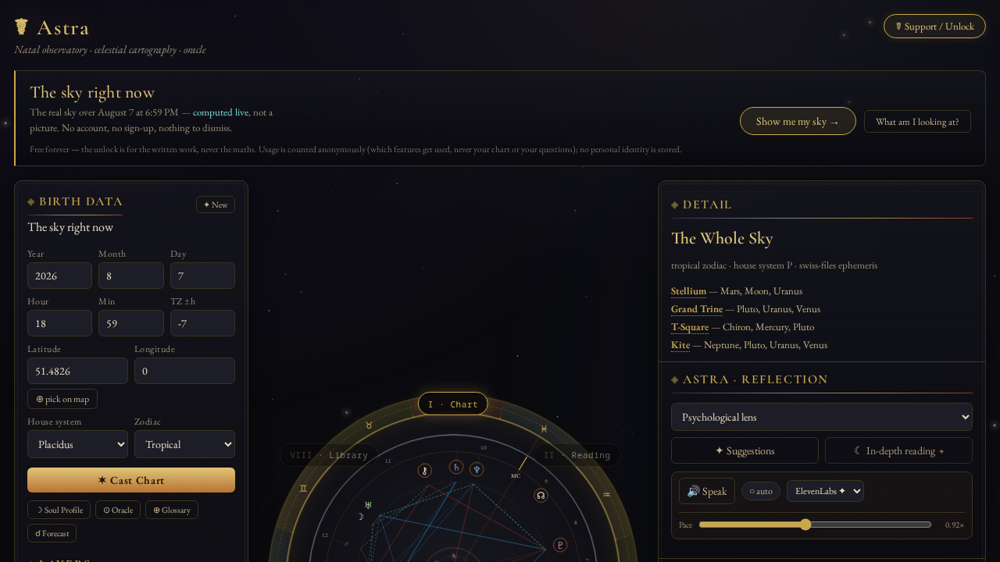
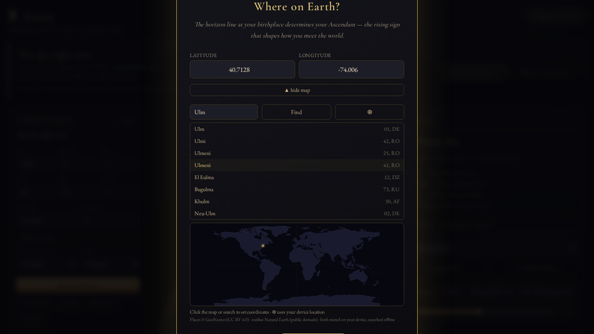
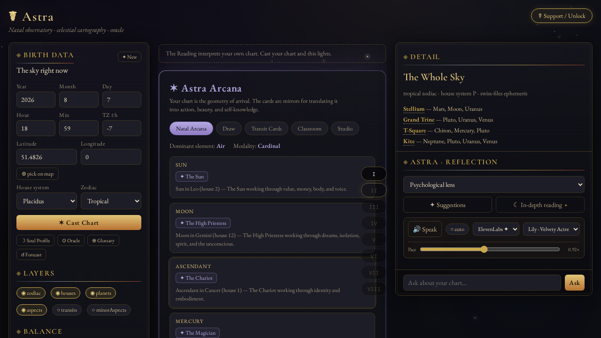
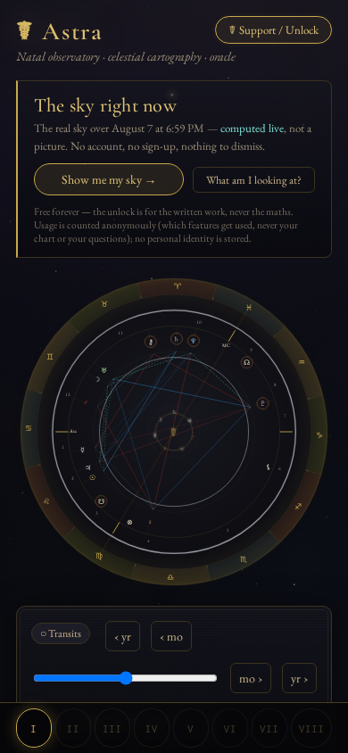

Read the sky. Draw the cards. Know your timing.
Natal astrology, tarot and predictive timing — computed from the Swiss Ephemeris to arc-second precision, not generated from a template. Open it and the real sky over you is already drawn.
No account. No sign-up. Nothing to dismiss.

Not a trial, not a teaser tier. The engine is the part we refuse to charge for.
Seventeen bodies from the Swiss Ephemeris, houses, aspects, patterns, dignities, elements and modalities.
Transits, a sixty-day forecast, progressions, solar returns, eclipse timelines and their natal activations.
A natal arcana signature and chart-weighted spreads — deterministic, so the same question and sky always draw the same cards.
Synastry, composite and Davison charts; harmonics, midpoint trees and fixed stars.
Most astrology apps send the place you were born to a geocoding service and the map you're looking at to a tile CDN. Astra used to as well. It doesn't now.
Searching for where you were born runs against 69,577 cities stored on your device, over a world map that ships inside the app. Choosing your birthplace makes no network requests at all.
✓ Enforced by an automated test that opens the map, runs a search, and fails the build if a single request leaves the origin.

Said plainly, including the part that is less flattering.
Your date, time and place compute a chart and are then let go — never written to a database, never written to a log. There is a test that fails the build if they appear in one.
No email, no password, no profile. Your charts, readings, journal and unlock token live in your own browser, and you can export or erase all of it.
Anonymous counts of which features get used — never your chart, never your questions. Nothing is sold, and there are no third-party scripts.
By default the chart is computed on our server, so your birth details do travel there over an encrypted connection. The promise isn't that they never move — it's that nothing is kept.

Room, not a better mind — the same writer, given space to finish a thought.
| Tier | Price | What it opens |
|---|---|---|
| Free | — | Everything the engine computes, forever. Plus two written readings a day from the same model subscribers get — kept short, but not watered down. |
| Supporter | $3.25 / mo | In-depth written readings at full length, premium narrated voice, and the daily transit reading. |
| Oracle | $9.99 / mo | Everything above, plus the full Oracle Report, the Course, and the deck-art studio. |
| Deluxe report | $5.50 once | One Oracle session expanded into a long, research-paper-style personal report, ready to print. Bought per session, not a subscription. |
Cancel any time from your own billing portal — no email required. Refunds within fourteen days. You can also contribute with crypto instead of a card.

Install it to your home screen and the deterministic half keeps running.
The chart engine is compiled into the app itself, so a cast, a tarot draw and a forecast all still work in airplane mode. That isn't a degraded offline mode bolted on afterwards — it's the same engine, and the parity between it and the server is pinned by tests.
An Android app, installed directly. No store account, no in-app purchases, nothing to sign into.
The app is the observatory, packaged whole — the chart engine, the 69,577-city gazetteer and the world map all travel inside the download. It never fetches code from us, which is why it still casts a chart with the network switched off.
It sells nothing. There is no billing code in the app at all: every free feature works, and if you subscribe, you do it on the web and import the key. That is a deliberate design choice rather than a missing feature — an app that cannot take payment is an app that needs no permission from a store to exist.
✓ Signed, and the certificate fingerprint is published below — so you can confirm an update came from us and not from someone else.
5.3 MB · Android 7.0 and later · works offline
Not on Google Play or F-Droid yet.
Verify it before you install
sha256sum astra-1.0-reader.apk
should print
b462f85e649a1a87b707f7ebea8fa5ab9b923b1f2ca2a7d638c7e9555d30eacd
signing certificate (SHA-256)
c568d41d45af616f034819320640f1a7368dbdaeb04346bda72ab203b2d0a82e
Android will warn you that this came from outside the Play Store. It did — that is what a direct download is. The checksum above is how you check the file is the one we built; the source it was built from is public.
A reading should hand you something you can use, not a verdict you have to live under.
Nothing Astra produces is a life sentence. It is a life poem.
No predictions of death, illness or catastrophe. No fatalism dressed up as insight. Every reading carries that disclaimer with it — not as a footnote in the interface, but as a field on the data itself, so it travels wherever the reading goes.